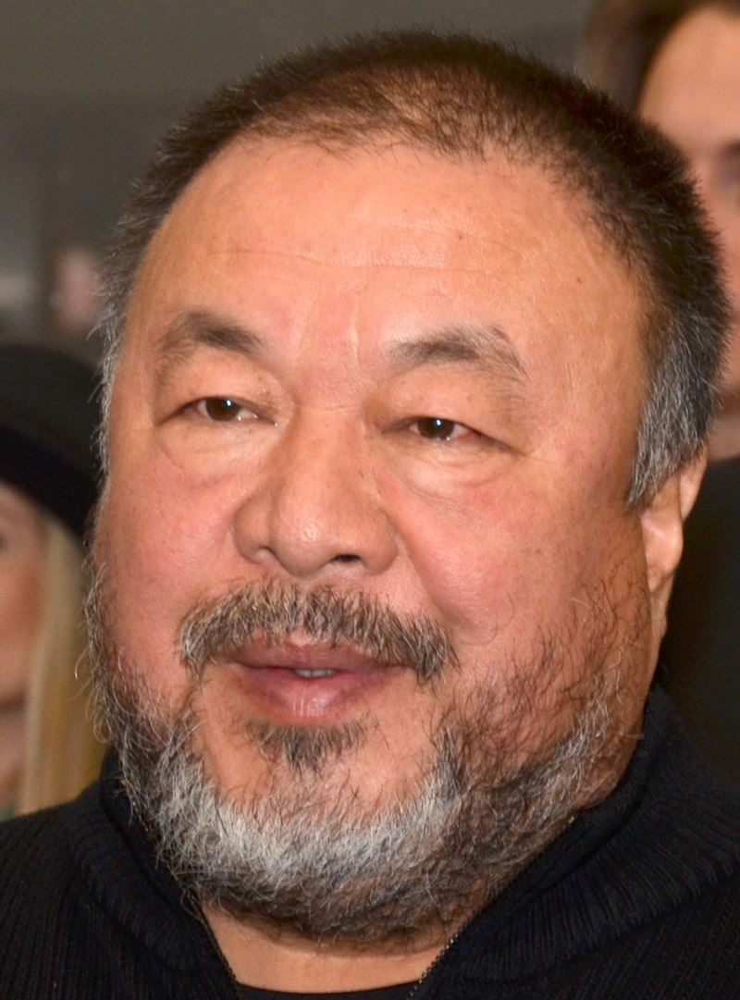
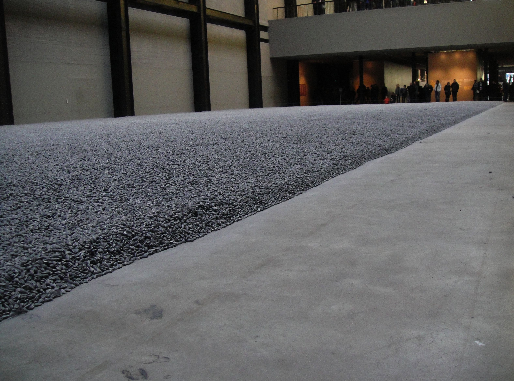

Ai Weiwei
28 August 1957 Beijing, China

Chinese artist and activist who produced a multifaceted array of creative work, including sculptural installations,
architectural projects, photographs, and videos. While Ai’s art was lauded internationally, the frequently provocative and subversive dimension of his art,
as well as his political outspokenness, triggered various forms of repression from Chinese authorities.
Visual art works:
- Dropping a Han Dynasty Urn
- Map of China
- Table with two legs on the wall
- Straight
- unflower Seeds
- Surveillance Camera
- 2Circle of Animals/Zodiac Heads
- Coca Cola Vase
- Grapes
- Free-speech Puzzle
- Trace
- Law of the Journey
- Two Iron Trees at The Shrine of Book
- Journey of Laziz
- Hansel and Gretel
- The Animal That Looks Like a Llama but Is Really an Alpaca
- man in a cube
- Good Fences Make Good Neighbors
- Forever Bicycles
- Forever
- Priceless
